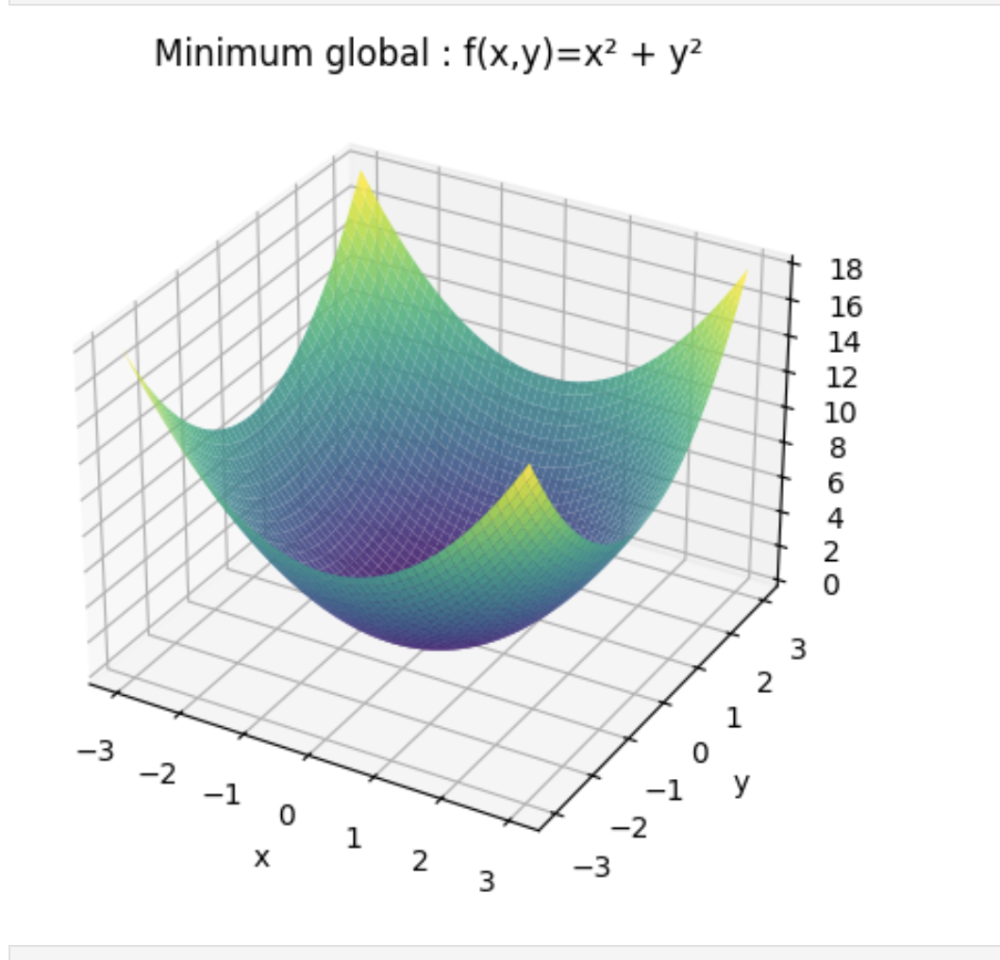
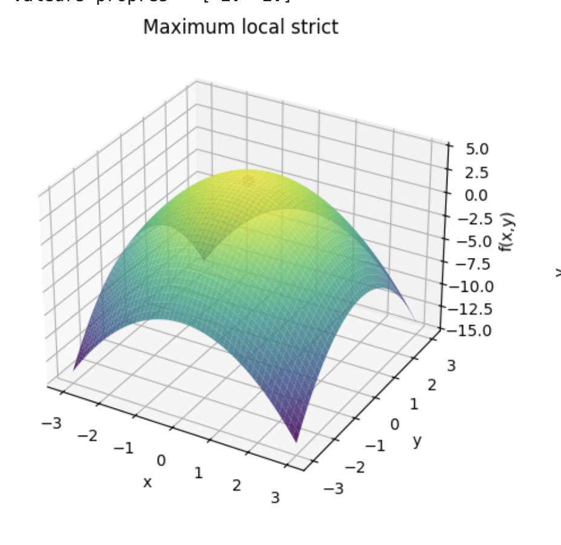
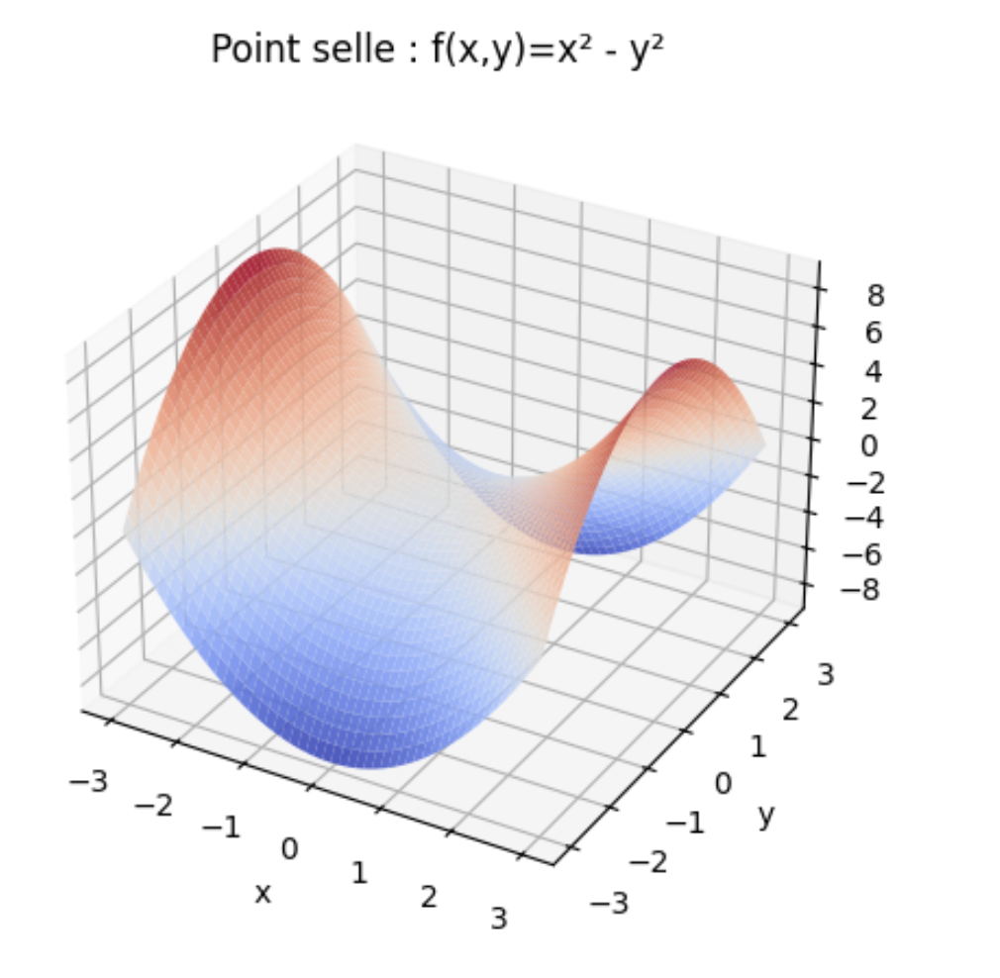
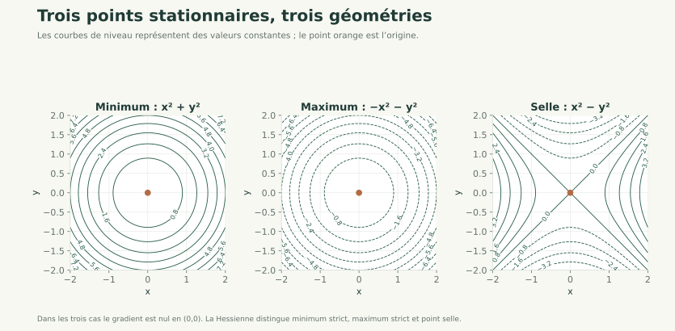

Socle d’analyse 01 / 36
Analyse pour l’apprentissage
Gradient et Hessienne
Dérivées partielles, courbure et nature locale des points critiques.
Slide 1 sur 363 %
Socle d’analyse 02 / 36
Fonctions à deux variables
Une fonction de deux variables est une application :
On la rencontre en :
- probabilités (densités),
- économie (coût, profit),
- physique (température, potentiel),
- optimisation (machine learning, statistiques).
Exemples simples :
Socle d’analyse 03 / 36
Représentations
a) Surface 3D
On visualise z=f(x,y) dans l'espace.
b) Courbes de niveau
Courbes f(x,y)=c
Exemple : pour
ce sont des cercles.
Socle d’analyse 04 / 36
Dérivées partielles
Elles décrivent comment (f) varie lorsqu'on modifie seulement une variable.
Exemples :
Socle d’analyse 05 / 36
Dérivée directionnelle
La fonction peut varier selon n'importe quelle direction
Définition :
C'est une combinaison pondérée des dérivées partielles.
Socle d’analyse 06 / 36
Gradient
Le gradient regroupe les deux dérivées partielles :
Interprétation :
- c'est un vecteur local, calculé en un point donné,
- il pointe vers la direction de variation la plus rapide,
- sa norme donne l'intensité de cette augmentation maximale.
Exemple :
Socle d’analyse 07 / 36
Points critiques
Un point critique est un point où :
Ce sont les candidats à :
- minimum local,
- maximum local,
- point-selle.
Socle d’analyse 08 / 36
Dérivées secondes et Hessien
On définit :
Le Hessien est :
Il sert à analyser :
- convexité / concavité,
- nature des points critiques.
Socle d’analyse 09 / 36
Hessienne
La Hessienne est symétrique si les dérivées secondes sont continues...
Toute matrice symétrique a :
- des valeurs propres réelles,
- une base de vecteurs propres,
- une diagonalisation orthogonale.
Socle d’analyse 10 / 36
Hessienne en un point critique
Test local avec NumPy, pour une fonction deux fois continûment différentiable et un point où le gradient s'annule :
eigvals = np.linalg.eigvalsh(H)
is_strict_local_minimum = np.all(eigvals > 1e-10)
Une Hessienne définie positive en ce point garantit un minimum local strict. Cela ne prouve ni la convexité sur tout le domaine ni l'unicité globale du minimum.
Sur un domaine ouvert convexe, une fonction deux fois continûment différentiable est convexe si sa Hessienne est positive semi-définie en tout point du domaine. Le test numérique en quelques points ne suffit pas à établir cette propriété globale.
Socle d’analyse 11 / 36
Minimum local

Socle d’analyse 12 / 36
Maximum local strict
eigvals = np.linalg.eigvalsh(H)
is_strict_local_maximum = np.all(eigvals < -1e-10)
En un point critique, une Hessienne définie négative garantit un maximum local strict. Ce test en un point ne prouve pas la concavité globale.
Socle d’analyse 13 / 36

Socle d’analyse 14 / 36
Point-selle
eigvals = np.linalg.eigvals(H)
is_saddle_point = np.any(eigvals < 0) and np.any(eigvals > 0)
is_saddle_pointprésence d'au moins une valeur propre positive et d'au moins une négative.
Le point critique n'est ni un minimum ni un maximum, c'est un point selle.
Socle d’analyse 15 / 36
Exemple code Python
import numpy as np
# Hessien de f(x, y) = x^2-y^2
H = np.array([
[2, 0],
[0, -2]
], dtype=float)
eigvals = np.linalg.eigvals(H)
print("Valeurs propres :", eigvals)
is_saddle = np.any(eigvals > 0) and np.any(eigvals < 0)
print("Point selle :", is_saddle)
Socle d’analyse 16 / 36

Socle d’analyse 17 / 36
Cas indécidable
# Des signes positifs et négatifs suffisent pour conclure à une selle,
# même si une autre valeur propre est nulle.
is_saddle = np.any(eigvals > 1e-10) and np.any(eigvals < -1e-10)
is_indecidable = (not is_saddle) and np.any(np.abs(eigvals) <= 1e-10)
print("Cas indécidable :", is_indecidable)
la méthode du Hessien ne permet pas de conclure.
Lorsque le test est indécidable, le point critique peut être un minimum ou un maximum, strict ou non, ou un point selle. Par exemple, a un minimum strict en 0 malgré une dérivée seconde nulle.
Il faut utiliser d'autres méthodes (développement plus poussé, étude de la fonction directement, etc.).
Socle d’analyse 18 / 36
Lire la courbure autour d'un point critique

La stationnarité ne suffit pas : examiner la variation dans plusieurs directions.
Socle d’analyse 19 / 36
Exemples
point critique : (0,0)
déterminant positif → minimum global.
Socle d’analyse 20 / 36
- gradient nul en (0,0)
- Hessien évalué au point
(0,0)
Socle d’analyse 21 / 36
Exercice — Dérivées partielles
Calculer (f_x) et (f_y) pour :
a)
b)
c)
domaine : x+y>0
Socle d’analyse 22 / 36
Exercice — Gradient
Donner le gradient :
a)
b)
c)
attention à la dérivation
Socle d’analyse 23 / 36
Exercice — Points critiques
Trouver et classifier les points critiques de :
a)
b)
c)
fonction classique en optimisation
Socle d’analyse 24 / 36
Exercice — Hessien et convexité
Pour chaque fonction, calculer le Hessien et conclure :
a)
Socle d’analyse 25 / 36
Exercice — Dérivée directionnelle
Pour :
calculer la dérivée directionnelle en direction du vecteur (u=(1,2)).
(Normaliser le vecteur.)
Socle d’analyse 26 / 36
Exercice — Approximations locales
Montrer que pour de petits
Appliquer à :
au point (1,1) pour
Près d'un point, une fonction est presque linéaire.
Socle d’analyse 27 / 36
Exercice — Lien optimisation / Machine Learning
Pourquoi le gradient chute-t-il vers 0 dans :
au point (0,0) ?
Pourquoi cela pose-t-il problème à l'algorithme de descente de gradient ?
Socle d’analyse 28 / 36
Exercice — Étude et classification d'un point critique
On considère la fonction suivante, définie sur
- Calculer les dérivées partielles premières de (g).
- Déterminer les points critiques de (g).
- Calculer les dérivées secondes et établir la Hessienne générale.
- Évaluer la Hessienne au point critique obtenu précédemment.
- Utiliser le déterminant du Hessien pour classifier la nature du point critique
(minimum local, maximum local, ou point-selle).
Socle d’analyse 29 / 36
Dimension supérieur à 2
On va raisonner par rapport aux valeurs propres, car leur signe indique directement la courbure de la fonction. Soit
𝐻 la Hessienne évaluée en un point critique (où le gradient s'annule).
vals = np.linalg.eigvalsh(H)
Socle d’analyse 30 / 36
Code Python théorique pour déterminer la nature de ces points à partir de la Hessienne.
import numpy as np
def analyse_hessienne(H):
vals = np.linalg.eigvalsh(H)
print("H =\n", H)
print("Valeurs propres :", vals)
if np.all(vals > 1e-10):
print("Conclusion : minimum local strict au point critique étudié.\n")
elif np.all(vals < -1e-10):
print("Conclusion : maximum local strict au point critique étudié.\n")
elif np.any(vals > 1e-10) and np.any(vals < -1e-10):
print("Conclusion : point selle, même si une autre valeur propre est nulle.\n")
else:
print("Conclusion : test local inconcluant avec la tolérance choisie.\n")
Socle d’analyse 31 / 36
Les exemples qui suivent s'appliqueraient à un point en particulier où le gradient s'annulerait.
Socle d’analyse 32 / 36
Exemple 1 : Hessienne définie positive au point critique
H1 = np.array([
[4, 1, 0],
[1, 3, 2],
[0, 2, 5]
])
analyse_hessienne(H1)
Socle d’analyse 33 / 36
Exemple 2 : Hessienne définie négative au point critique
H2 = np.array([
[-2, 0, 0],
[0, -3, 1],
[0, 1, -4]
])
analyse_hessienne(H2)
Socle d’analyse 34 / 36
Exemple 3 : Hessienne avec signes mélangés (selle)
H3 = np.array([
[2, 1, 0],
[1, -1, 0],
[0, 0, 3]
])
analyse_hessienne(H3)
Socle d’analyse 35 / 36
Exemple 4 : Valeur propre nulle (test inconcluant)
H4 = np.array([
[1, 0, 0],
[0, 0, 2],
[0, 2, 3]
])
analyse_hessienne(H4)
Socle d’analyse 36 / 36
Exercice
Conclure
import numpy as np
# Hessienne dimension 5
H = np.array([
[4, 1, 0, 0, 2],
[1, 3, 2, 0, 0],
[0, 2, 5, 1, 0],
[0, 0, 1, 2, 1],
[2, 0, 0, 1, 3]
])
Vecteur gradient
Le gradient est un vecteur qui "montre" où la fonction augmente le plus vite,
et dont la longueur indique à quel point elle augmente vite.
Vous avez parcouru ce chapitre.
Calcul différentiel matriciel →Les corrections s’ouvrent en cliquant sur « Afficher la correction ».